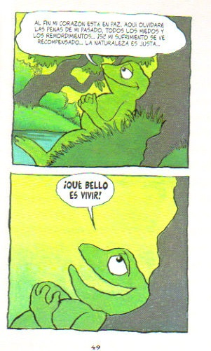
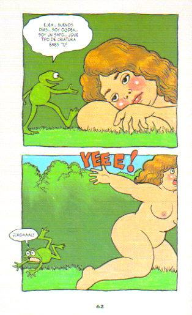
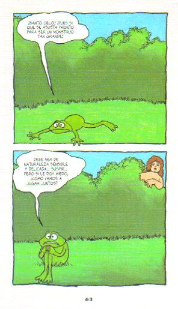
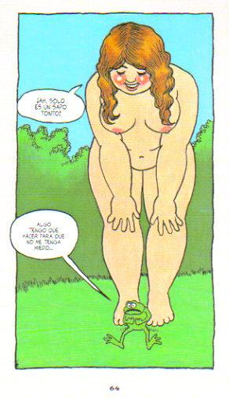
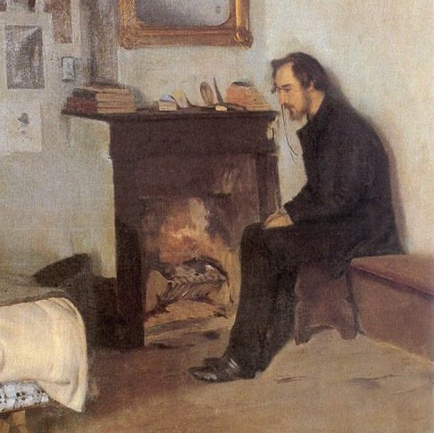
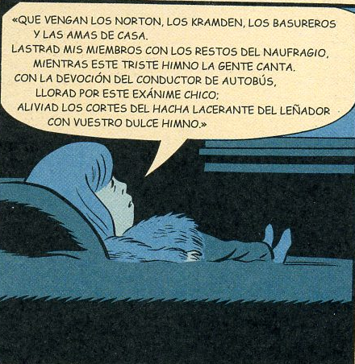

Frases y fragmentos de lecturas más o menos recientes
I think we ought to read only the kind of books that wound and stab us. If the book we’re reading doesn’t wake us up with a blow on the head, what are we reading it for? So that it will make us happy, as you write? Good Lord, we would be happy precisely...
El gran libro Yum Yum




— Robert Crumb, El gran libro Yum Yum
Frases y fragmentos de lecturas más o menos recientes

El Hombre está hecho para soñar como yo para tener una pierna de madera.
— Erik Satie
Frases y fragmentos de lecturas más o menos recientes
Cuando he estado una temporada sin placer y sin dolor y he respirado la tibia e insípida soportabilidad de los llamados días buenos, entonces se llena mi alma infantil de un sentimiento tan doloroso y de miseria, que al dormecino dios de la semisatisfacci...
David Goldberg

Que vengan los Norton, los Kramden, los basureros y las amas de casa.
Lastrad mis miembros con los restos del naufragio, mientras este triste himno la gente canta.
Con la devoción del conductor de autobús, llorad por este exánime chico; aliviad...
Microrrelato
– Escucha eso. ¿Cómo conseguirán que una canción compuesta por una máquina suene tan hermosa?
Díem Gólem
Con arcilla informe construí un muñeco. Le di dos brazos, dos piernas y una cabeza. Le puse ojos, pero no veía; le puse boca, pero no hablaba; le puse nariz, pero no respiraba. Porque mi muñeco no tenía vida. Entonces soplé…
…Y sentí al mismo tiempo...
Música antigua
Cuando escucho música antigua, es una de las pocas veces en que tengo amor por la humanidad. Escuchas la mejor parte del alma de la gente común. Es el modo en que se expresan, su conexión con la eternidad o como quieras llamarlo. La música moderna...
Memorias
Soy el distraído que se tropieza cuando camina. A veces, el que va caminando a toda prisa.
Trato de ser amable y estar menos equivocado.
Me gustan los libros viejos, la lógica combinatoria, los pensamientos tautológicos y los oxímoron.
Soy invisible...